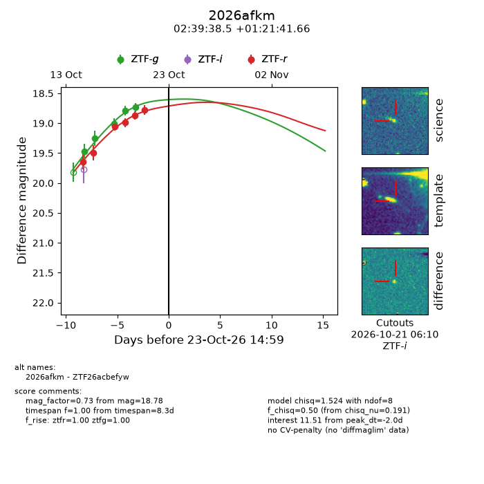
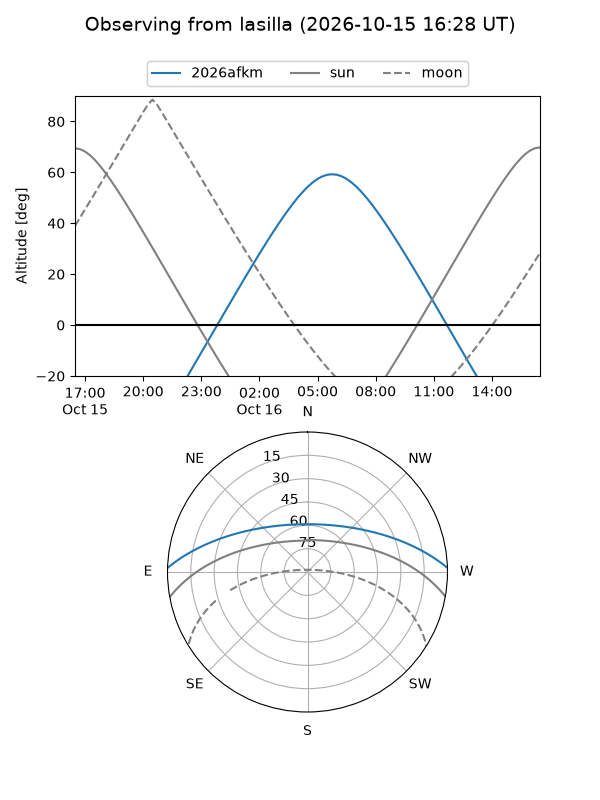
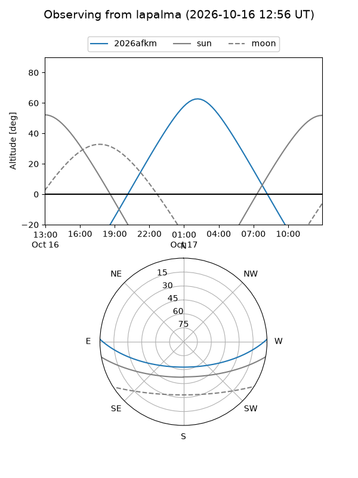
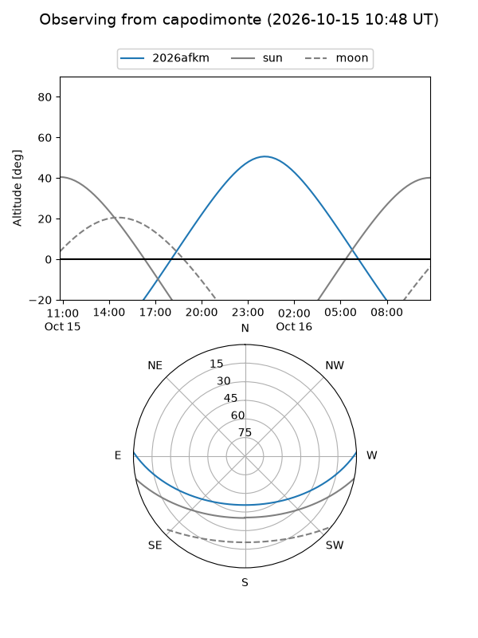
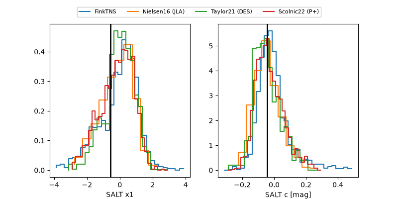

2026afkm
Target 2026afkm at 2026-10-23 15:01
Aliases and brokers:
FINK-ZTF: ztf.fink-portal.org/ZTF26acbefyw
Lasair-ZTF: lasair-ztf.lsst.ac.uk/objects/ZTF26acbefyw
ALeRCE-ZTF: alerce.online/object/ZTF26acbefyw
YSE-PZ: ziggy.ucolick.org/yse/transient_detail/2026afkm
TNS name: wis-tns.org/object/2026afkm
Direct TNS query: direct search
alt names
ZTF26acbefyw (ztf,fink_ztf)
2026afkm (tns,yse)
Coordinates:
equatorial (ra, dec) = 39.9103,+1.36157
equatorial (HMS+DMS) = 02:39:38.47,+01:21:41.66
galactic (l, b) = (169.7194,-51.40434)
Flags:
peak dt: -2.0
Photometry:
last ztfg=18.74, ztfr=18.78
5 ztfg, 6 ztfr detections
Lightcurve

Visibility



Additional plots
